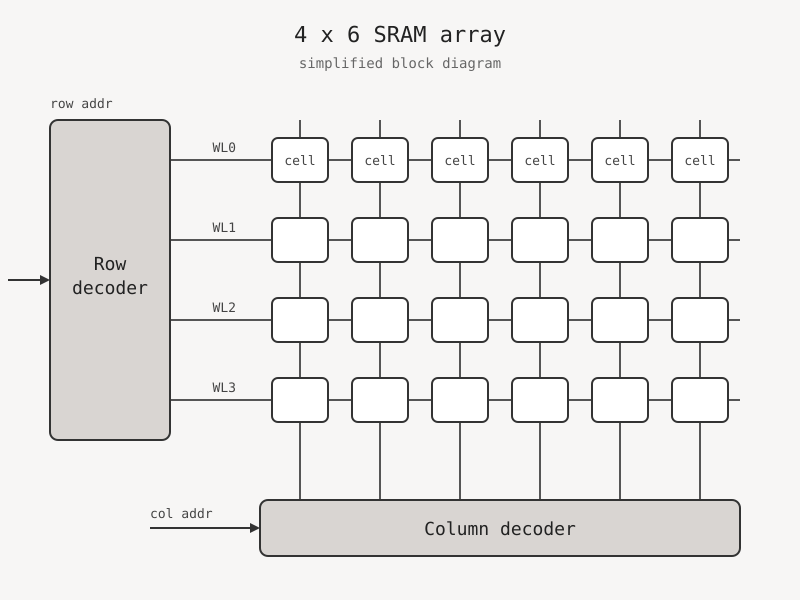

This is my final project for the VLSI design course (EEE4310/5322): designing an SRAM memory array in Cadence on a 45 nm process. It is a group project, and I am taking the graduate-section version, which specifies an array of 4 rows by 6 columns.

Simplified block diagram for illustration (not a Cadence screenshot).
What an SRAM array is. SRAM is the fast memory built into processors, used for caches and registers. The array is a grid of tiny storage cells. To read or write one cell, the chip has to pick exactly one row and one column out of the grid.
My part: the row and column decoders. A decoder turns a binary address into a single active line. The row decoder takes the row address and switches on one of the 4 word lines, which activates one row of cells. The column decoder takes the column address and selects which of the 6 columns is connected to the read/write path.
Verification. A layout is only usable if it passes two checks. DRC (design rule check) confirms the drawn shapes follow the manufacturing rules for the 45 nm process. LVS (layout versus schematic) confirms the layout is electrically the same circuit as the schematic. My row decoder layout passes both DRC and LVS, and the column decoder layout is complete.
Tools: Cadence (schematic and layout), 45 nm process. The full array is a team effort; this page covers my decoders.